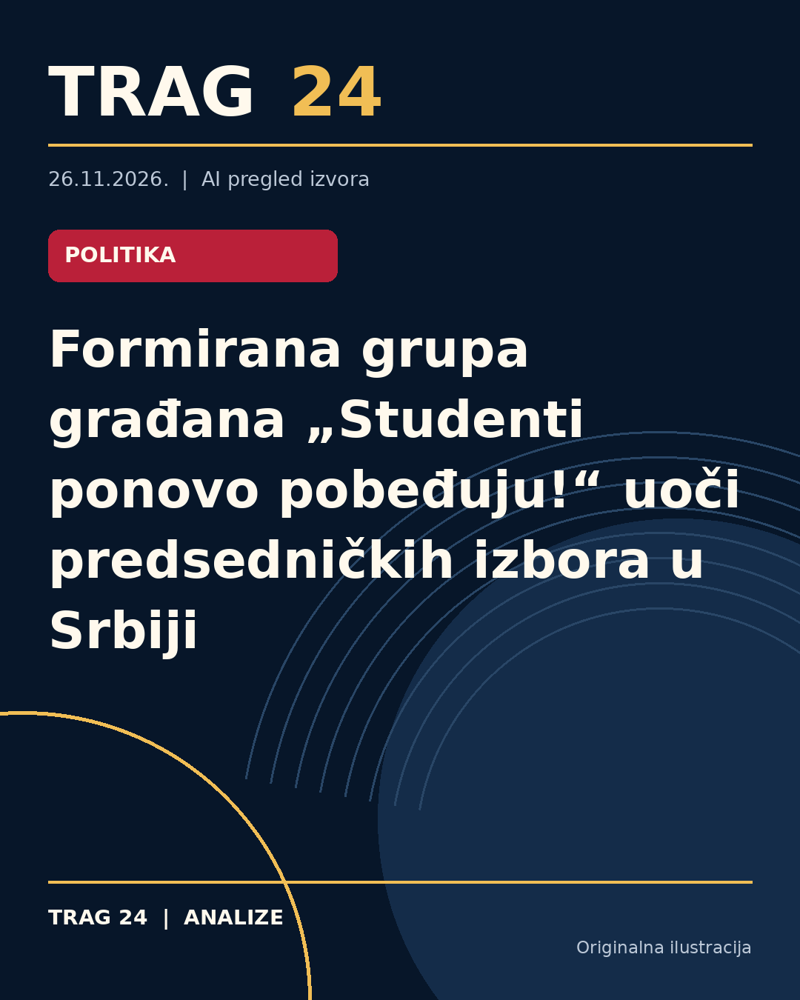

Formirana grupa građana „Studenti ponovo pobeđuju!“ uoči predsedničkih izbora u Srbiji

ŠTA SE DOGODILO
Grupa građana „Studenti ponovo pobeđuju!“ je zvanično formirana kao nastavak aktivnosti Studentskog pokreta, sa planom da učestvuje u predstojećim predsedničkim izborima zakazanim za 27. decembar. Grupa je predlagač predsedničkog kandidata, za koga će ime biti objavljeno naknadno.
HRONOLOGIJA
Osnivanje grupe usledilo je nakon parlamentarnih izbora na kojima je studentska lista osvojila 140 poslaničkih mandata. Grupa je registrovana u okviru priprema za predsedničke izbore, a njeni osnivači čine Aleksandar Cvetković, Katarina Šćepanović, Dušan Đurđević, Daliborka Purić i drugi. Zvanična najava kandidata studentskog pokreta očekuje se uskoro, a podršku kandidatu već su dali Pokret Kreni-Promeni i Demokratska stranka.
ŠTA NAVODE IZVORI
Prema dostupnim informacijama, grupa građana ima nameru da iskoristi izbore kao priliku za političke promene u Srbiji. Poslanici i članovi Studentske liste ističu da je proces promena u zemlji već počeo ali da je potrebano vreme za ostvarenje ciljeva. Grupa kao kandidata za predsednika navodi Radomira Saičića, profesora Hemijskog fakulteta u Beogradu i člana Srpske akademije nauka i umetnosti, što je potvrđeno iz izvora bliskih Studentskom pokretu.
ŠTA JE POTVRĐENO
Postojanje grupe „Studenti ponovo pobeđuju!“ kao pravno registrovanog subjekta je potvrđeno kroz objave na društvenim mrežama i izveštaje medija. Takođe, potvrđeno je da grupa planira da učestvuje na predsedničkim izborima i da ima zvaničnog predlagača za predsedničkog kandidata. Podrška druge opozicione političke organizacije Demokratske stranke i Pokreta Kreni-Promeni ovoj grupi takođe je evidentirana.
ŠTA NIJE POTVRĐENO
Izvori još nisu obelodanili konačno ime predsedničkog kandidata iz grupe „Studenti ponovo pobeđuju!“, iako se pominje Radomir Saičić iz Studentskog pokreta. Nema potvrde o tome kako tačno grupa planira svoj izborni nastup, kao ni detaljnih programa i politike koje će slediti tokom kampanje. Nije poznato ni kako će se grupa pozicionirati u odnosu na ostale političke opcije na izborima.
ŠTA OSTАJE OTVORENO: Očekuje se objavljivanje imena kandidata ove grupe i detaljnije predstavljanje programa pred izbore. Takođe ostaje otvoreno koliko će uticaja i podrške grupa imati među biračima i kakav će biti njihov doprinos izbornoj dinamici. Dalje informacije o načinu vođenja kampanje, koalcijama i mogućim partnerstvima do sada nisu objavljene.
Izvori
- https://vreme.com/vesti/predsednicki-izbori-grupa-gradjana-studenti-ponovo-pobedjuju/
- https://www.euronews.rs/srbija/politika/253861/grupa-studenti-ponovo-pobeduju-najavila-izlazak-na-izbore/vest
- https://www.b92.net/info/politika/288421/formirana-grupa-gradjana-studenti-ponovo-pobedjuju/vest
Ova analiza je pripremljena uz pomoć veštačke inteligencije na osnovu javno dostupnih izvora. Navodi izvora nisu nužno nezavisno potvrđeni.